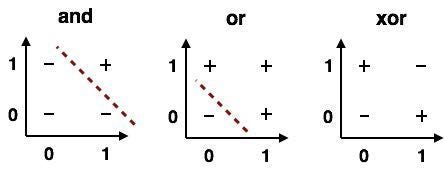
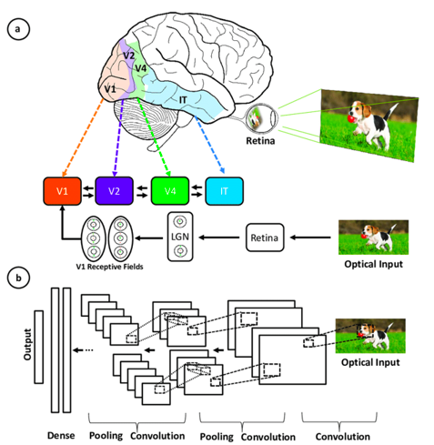
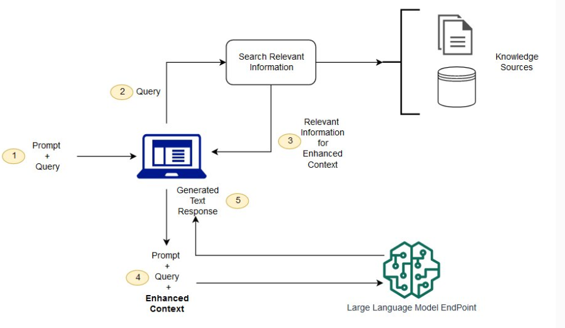

ANNs & Generative AI
How to get startedWhat we will cover
- Brief overview of ANNs
- Brief overview of LLMs & related concepts
- What GAI is good at
- Specifically wrt. our jobs
- What GAI is not good at
- Specifically wrt. our jobs
- How to get started
- Live demos of locally running LLMs
ANNs in Brief
Why ANNS at all?
1950s research by Frank Rosenblatt, wanted to create a replication of how neurons work. Could only solve linearly separable problems.

CNNs & AlexNet

Transformers
Trained on large amounts of existing information.
Retrieval Augmented Generation (RAG)

What do LLMs do well
Simple functions
In Javascript, please write me a function that given an array of numbers, multiplies them by three and sums them together
function multiplyAndSum(arr) { return arr.reduce((total, num) => total + (num * 3), 0); }
Can you rewrite this as a fat-arrow function?
const multiplyAndSum = arr => arr.reduce((total, num) => total + (num * 3), 0);
Can you rewrite this without using reduce?
function multiplyAndSum(arr) { let sum = 0; for(let i=0; i<arr.length; i++){ sum += arr[i]*3; } return sum; }
Can you add some error-handling?
function multiplyAndSum(arr) { if (!Array.isArray(arr)) throw new Error('Input must be an array'); if (arr.some((num) => typeof num !== 'number')) throw new Error('All elements in the input must be numbers'); let sum = 0; for (let i = 0; i < arr.length; i++) { sum += arr[i] * 3; } return sum; }
I don't like writing tests, can you write me some jest tests?
// Assuming that you saved this file at './multiplyAndSum.js' // You need to adjust the path accordingly if it's different. const multiplyAndSum = require('./multiplyAndSum'); describe("Multiply and Sum", () => { it("should correctly process valid input", () => { const result = multiplyAndSum([1,2,3]); expect(result).toBe(18); // Adjust expected value based on how your function works }); it("should handle empty arrays", () => { const result = multiplyAndSum([]); expect(result).toBe(0); }); it("should throw an error when input is not an array", () => { expect(() => multiplyAndSum("not an array")).toThrow(/Input must be an array/); }); it("should throw an error when the array contains non-numeric values", () => { expect(() => multiplyAndSum([1,'two',3])).toThrow(/All elements in the input must be numbers/); }); });
LLMs are good at handling simple, well-defined, well-understood problems with a corpus of prior information
Bonus
Can you please rewrite the function in Rust?
pub fn multiply_and_sum(numbers: &[i32]) -> i32 {
let sum: i32 = numbers.iter().map(|&x| x*3).sum();
sum
}
What do LLMs not do well
More complicated problems
Write me a function in javascript that adds two numbers together, call it 'add'. Write me another function that subtracts two numbers, call it 'subtract'. Write me a function called 'compose' that takes 4 numbers, it adds the first two using `add`, the second two using `add`, subtracts the results using `subtract`, and then returns the result of this as a number.
function add(a, b) {
return a + b;
}
function subtract(a, b) {
return a - b;
}
function compose(a, b, c, d) {
var sum1 = add(a, b);
var sum2 = add(c, d);
var difference = subtract(sum1, sum2);
return difference;
}
ok, now make it so that compose accepts a list of numbers. I want each pair in the list to be added, and then the resulting additions to be subtracted from one another, please return the result
function compose(numbers) {
// Reduce the array into a single value by adding each element together
let sum = numbers.reduce((total, currentNum) => total + currentNum, 0);
// Divide the total sum into two equal parts
let halfSum = sum / 2;
// Subtract this half sum from the original sum
return sum - halfSum;
}
Not so hot…
please make it so that compose accepts a list of numbers. I want each pair in the list to be added, and then the resulting additions to be subtracted from one another, e.g. [1, 2, 3, 4] => [3, 7] => 3 - 7 => -4. please return the result
function addPairsAndSubtract(arr) {
if (arr.length < 2 || arr.length % 2 !== 0) {
throw new Error('Array must have at least two elements and even number of elements');
}
// Add pairs of numbers and store them in an array
var sums = [];
for (var i = 0; i < arr.length; i += 2) {
sums.push(add(arr[i], arr[i + 1]));
}
// If there are more than two sums, recursively call addPairsAndSubtract on the sums array
if (sums.length > 2) {
return addPairsAndSubtract(sums);
} else {
// Subtract the last element from the first element
return subtract(sums[0], sums[1]);
}
}
// Helper functions
function add(a, b) { return a + b }
function subtract(a, b) { return a - b }
Recursively call subtract?
If the array is 6 elements long this doesn't work, because sums.length will be 3, which then causes an error
function compose(numbers) {
// Check if the array has at least four elements
if (numbers.length < 4) {
throw new Error('Compose requires at least four numbers');
}
let sums = [];
while (numbers.length > 2) {
let pairSum = numbers.splice(0, 2).reduce((a, b) => a + b);
sums.push(pairSum);
}
let lastPairSum = numbers[0] + numbers[1];
sums.push(lastPairSum);
return diffArrayRecursive(sums);
}
function diffArrayRecursive(arr){
if (arr.length == 2){
return arr[0]-arr[1];
} else {
let diffArr = [arr[0] - arr[1]].concat(arr.slice(2));
return diffArrayRecursive(diffArr);
}
}
Can you solve this without recursion?
def fibonacci_iterative(n): # Initialize the first two Fibonacci numbers f1 = 0 f2 = 1 # If n is less than or equal to 0, return if n <= 0: return "Input should be positive" elif n == 1: return f1 elif n == 2: return f2 else: while True: n -= 1 f3 = f1 + f2 f1 = f2 f2 = f3 if n == 1: return f1 elif n == 2: return f2
Bonus
Do LLMs lie, answer yes or no
No
We'll do it live
Run your own
- Llama.cpp https://github.com/ggerganov/llama.cpp
- HuggingFace https://huggingface.co/
KoboldCPP
Very easy to get started with, on Windows & Linux (I haven't tried on OSX)

TheBloke
https://huggingface.co/TheBloke
Provides quantized models suitable for KoboldCPP
Which means we can run them on our own hardware
Conclusion
Good for simple, well understood problems Bad for solving entirely novel solutions Still early days
Further Readings
- Andrej Kaparthy - Neural Networks: Zero to Hero | https://www.youtube.com/playlist?list=PLAqhIrjkxbuWI23v9cThsA9GvCAUhRvKZ
- Attention is all you need | https://arxiv.org/abs/1706.03762